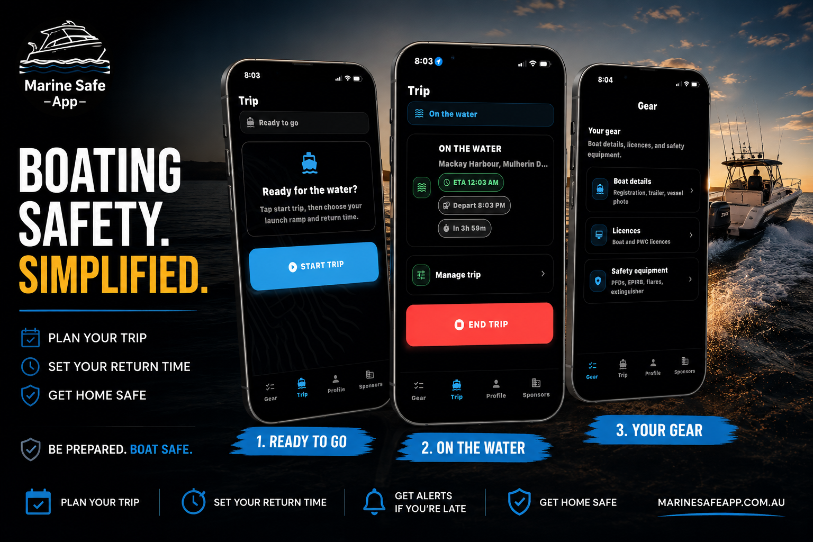
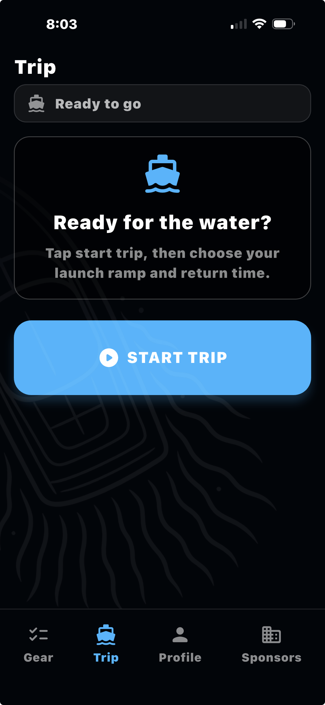
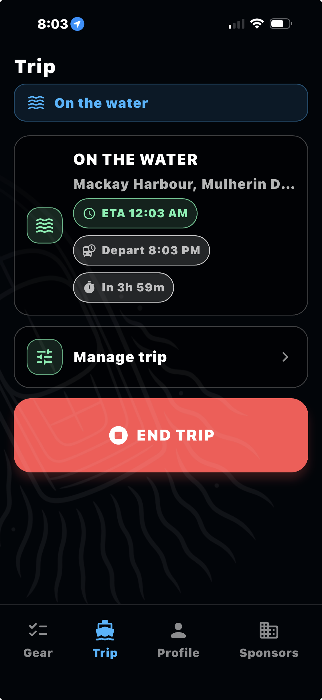
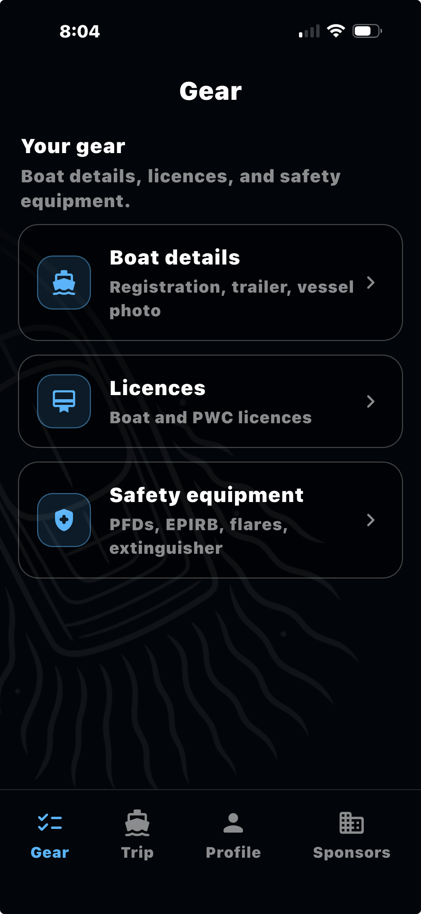

1
Choose your ramp
Select where you're launching and confirm your trip details.
Before you launch, tell Marine Safe where you're leaving from, who's on board and when you plan to be back. It's quick, simple and free.
Available now on Apple's App Store. No tester sign-up needed.

One tap takes you straight to the App Store.
Get Marine Safe FREEMarine Safe makes a simple boating safety routine quick enough to use every time you head out.
Select where you're launching and confirm your trip details.
Set when you expect to return and record the people on board.
Receive reminders as your ETA approaches and if your trip becomes overdue.
When you're safely back, end the trip and close out the journey.
Simple screens, big controls and the information you need without digging through complicated menus.



Record your safety gear expiry dates in Marine Safe and get reminders as due dates get closer. Keep EPIRBs, flares, life jackets and fire extinguishers front of mind before you hit the water.
We'll remind you before gear expires.
Marine Safe brings trip timing, emergency contacts, vessel information and safety preparation together in one straightforward app.
The Android version is still in Google Play testing while we work toward public release.